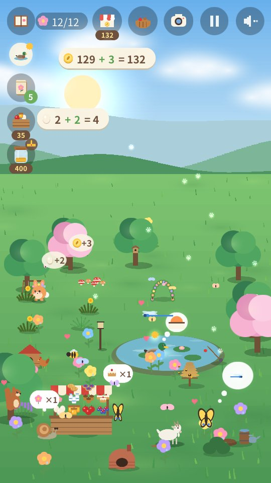
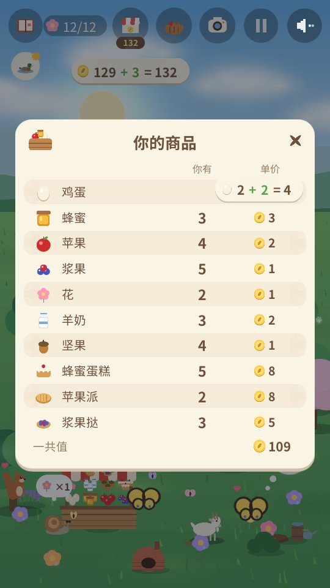
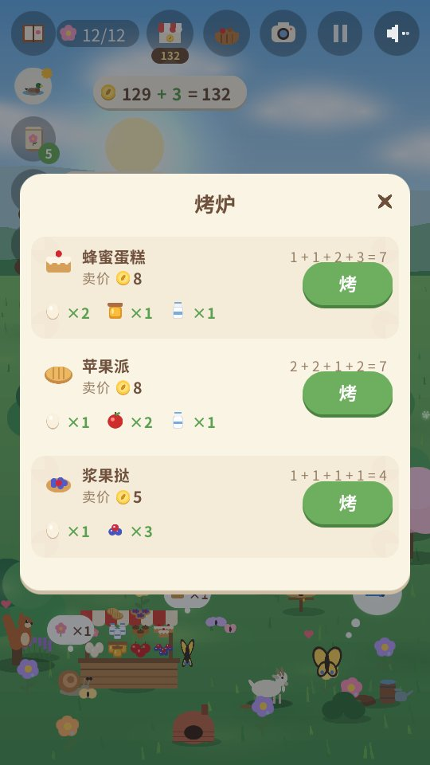
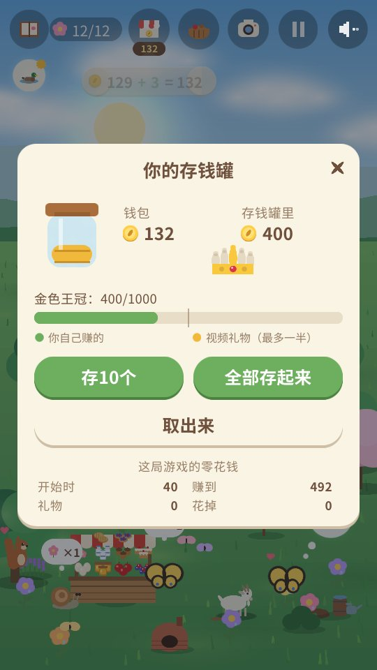

Arnoob Land
一款给孩子玩的安静自然游戏

一座安静的花园需要你的帮助。一只小兔子想让这里重新成为家，一颗种子接一颗种子。种花，建池塘，放出零食，看看谁会来拜访。每个季节都会来新的动物朋友：春天有蜜蜂和鸭子，夏天有乌龟和蜂鸟，秋天有狐狸和獾，冬天有雪鸮和水獭。
- 安静又温柔： 没有计时，没有会输掉的分数，也不会失败。
- 只有大自然的声音： 风声、水声、雨声、鸟鸣和动物的叫声。没有音乐。
- 四个季节，80种动物 等你去交朋友，还有金色动物和难得的奇妙时刻等你发现。
- 看月亮： 一夜又一夜，月亮从新月变成满月再变回去，猫头鹰最喜欢满月的夜晚。
- 拍照片 给你的动物朋友拍照，放进相册：每张照片都能赚一个金币。
- 学会照顾朋友： 留意每种动物需要什么，为它建个家（池塘、木头堆、浆果丛……），新朋友就会来得更快；帮它们实现愿望，让两个朋友一起玩，送朋友一朵花，看着友谊慢慢长大。
- 经营一座小农场： 喂母鸡，养蜜蜂和山羊，摘苹果、浆果和花，再拿到热闹的小摊上卖给来买东西的朋友。买来的东西可以半价卖回，但池塘、植物、种子和树不行。
- 当花园小帮手： 拔草、扫落叶、清扫积雪，装满堆肥堆，就能多一份收成，农场也会变快；还要给花和果树浇水。每做一件事，花园小帮手的等级就会提高。
- 烘焙和完成订单： 把鸡蛋、羊奶、蜂蜜、苹果和浆果做成蛋糕、派、挞和果酱，卖出更好的价钱；朋友带来小订单时，算一算总价。
- 边玩边算数： 每收一个鸡蛋、卖一个鸡蛋，每赚一个金币、花一个金币，都会显示成简单的算式，比如 3 + 2 = 5。
- 学会存钱： 把金币放进存钱罐，看它每天长大一点，存钱买金色王冠。
- 一块一块做出金色王冠： 存钱会让它装满金子，朋友们会带来它的三颗宝石。
- 每个季节都有安静的小游戏： 钓鱼（鱼会被放回水里）、抓萤火虫（它们会飞走）、秋天收坚果和苹果，还有堆雪堡。
- 和朋友捉迷藏： 交到五个朋友后，它们会藏在花园各处，一起玩耍；找到所有朋友后，金色朋友也会更常来。
- 八种语言： 英语、阿拉伯语、中文（简体）、法语、德语、日语、俄语和西班牙语。游戏会用你手机的语言开始（其他语言则用英语），在开始画面点地球图标就能更换。游戏原本用英语写成，其他七种语言是在人工智能的帮助下翻译的。
- 一段漫长而温柔的旅程： 可以花很多天玩完一整年，也可以只玩一个季节的短游戏。你的花园会随时保存。
- 如果你喜欢，还有梦想花园： 存钱买秋千、小桥、喷泉、树屋等等。朋友们会来使用它们，还可能有四位神秘朋友来看看。
在花园里




给家长
没有账号，没有聊天，也没有购买。只有当孩子自己选择观看时才会播放视频，并得到游戏里的一份小礼物：一篮可以卖的商品、几个金币、给花园的惊喜、种子或零食。
隐私政策 app-ads.txt